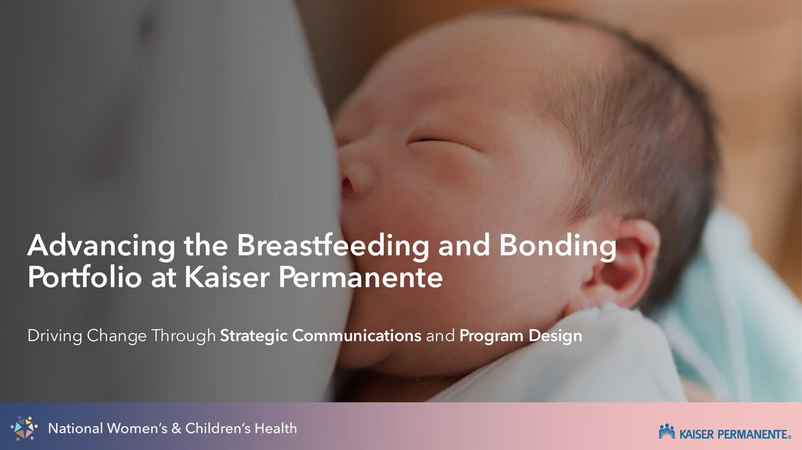
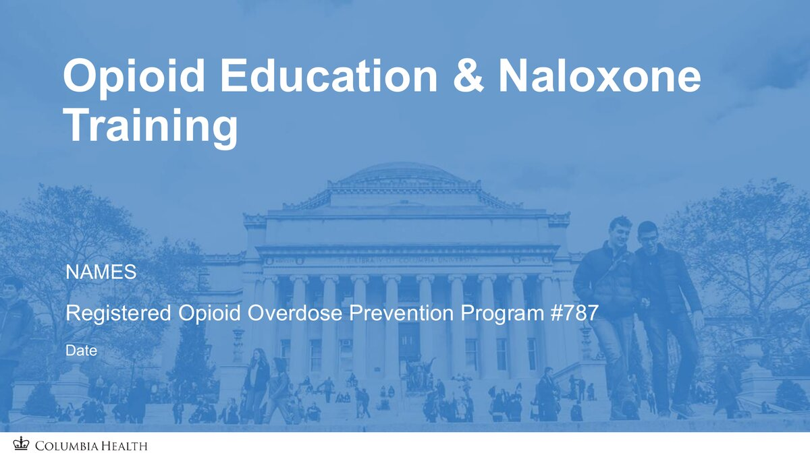

Things I've built, designed, and analyzed
Each project blends program design, culturally sensitive communication, and strategy-driven content.
Improving breastfeeding care through clinician education
When I interned at Kaiser Permanente on the National Women's and Children's Health team, I developed a communication strategy to integrate the Lactation Educational Program across eight Kaiser markets. I facilitated several high-level meetings with senior executives, coordinated follow-up activities across workgroups, and created training materials that reached 300+ front-line staff. This experience strengthened my organizational and leadership skills, as well as my ability to keep large-scale projects on track. This communication strategy ultimately increased clinician training rates by 21%, with the goal of enhancing breastfeeding care long-term.

View full deck »Expanding opioid overdose prevention education
At Columbia Health, I created curriculum for health education sessions to expand naloxone and fentanyl test strip distribution. I then spearheaded a process evaluation to assess the impact and effectiveness of this curriculum through the creation of new data collection instruments and a refined implementation strategy.

View full deck »Translating data into interactive dashboards